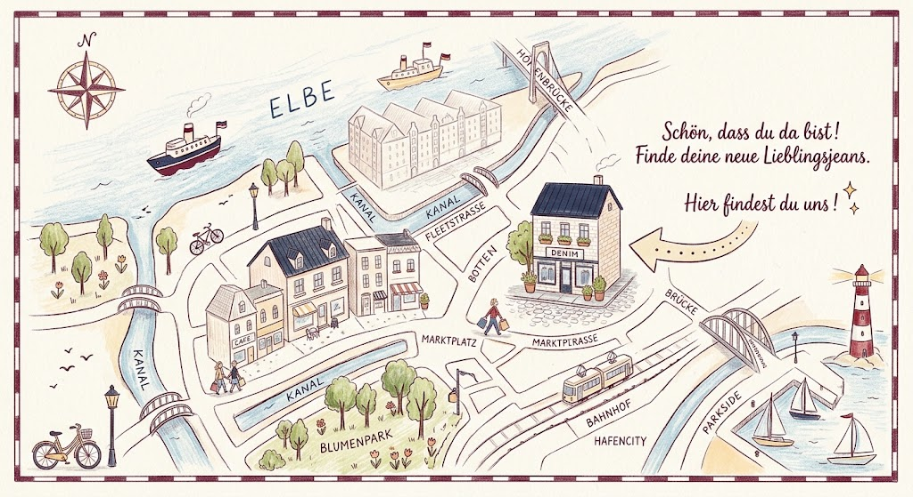

NORDSTICH HAMBURG
Wir freuen uns,
auf Ihren Besuch.
Sie haben Fragen oder möchten unsere Auswahl persönlich entdecken? Hier finden Sie alle Informationen, um Kontakt aufzunehmen und Ihren Besuch in Hamburg zu planen.
PERSÖNLICH. ZEITLOS. DENIM.
Gute Jeans entdeckt man am
besten vor Ort.
Besuchen Sie uns in Hamburg. Wir nehmen uns Zeit, hören Ihnen zu und helfen Ihnen dabei, ein Modell zu finden, das zu Ihnen und Ihrem Stil passt.
Mehr über unsere BeratungBESUCHEN SIE UNS
NORDSTICH.
Straße in Hamburg 122041 Hamburg
Telefon
123 - 456 789 10
Öffnungszeiten
Montag – Freitag10:00 – 18:00 Uhr
Samstag10:00 – 16:00 Uhr
SonntagGeschlossen
Nutzen Sie die Adresse für Ihre persönliche Anfahrtsplanung.
IHR WEG ZU UNS
Mitten in Hamburg-Wandsbek.
Wir freuen uns auf Ihren Besuch.

Persönlich. Zeitlos. Denim.
Wir freuen uns darauf, Sie kennenzulernen!